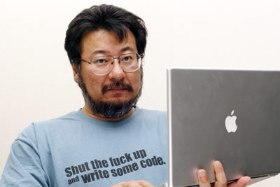

オープンセミナー2012@岡山
※当日、天候によっては気温が高いことが予想されますので、
各自、暑さ対策（団扇や扇子の持参、水分の補給等）
をお願いします
※申込期限は2012/05/11 12:00までとさせていただきます。
お早めにお申し込み下さい。
?開催概要
オープンセミナー2012＠岡山
http://openseminar.okaya.ma/
オープンセミナーはソフトウェア技術をテーマにした無料セミナーです。
このセミナーの企画と運営は技術系ユーザコミュニティのボランティア
で行われています。昨年は香川県高松市、徳島県徳島市、愛媛県松山市、
岡山県総社市、広島県広島市で開催された実績があります。すばらしい
講師陣である事は講師名で検索して頂くと直ぐに分ります。コミュニティ
主催のセミナーに参加が初めての方もお気軽にお越し下さい。
■開催日時： 2012年5月12日（土）
受付開始：9:30～
■開催場所： 岡山県立大学
http://www.oka-pu.ac.jp/
岡山県立大学 キャンパス平面図
http://www.oka-pu.ac.jp/information/campusmap.html
■アクセス： 電車または車でお越し下さい。（無料駐車場あり）
http://www.oka-pu.ac.jp/information/access.html
電車の場合は、以下のURLから、
出発駅： 岡山,到着駅： 服部で検索してください。
http://mydia.jr-odekake.net/search/mobile.cgi
■参加費： 無料
■昼食会： お弁当費用1000円（事前にお申し込みください）
■懇親会： Ryoutei(http://www.233-3959.com/ryoutei/index.html）
費用4000円（事前にお申し込みください。学生は半額。）
■参加申し込み： http://kokucheese.com/event/index/26302/
注意事項
当日、大学の食堂は12:00-13:00利用できます。メニューが限られているので
弁当を持参されるのも良いと思います。
『未成年の方は、必ず保護者の方の同意を得た上でお申込み・ご参加下さい』
----------------------------------------------------------------------
■開催内容 ※時間等については調整中です
＝＝＝＝＝＝＝＝＝＝＝＝＝＝＝＝＝＝＝＝＝＝＝＝＝＝＝＝＝＝＝＝＝＝＝＝＝
■オープニング（10:00～10:10）
----------------------------------------------------------------------
・実行委員長 挨拶
・会場諸注意等
＝＝＝＝＝＝＝＝＝＝＝＝＝＝＝＝＝＝＝＝＝＝＝＝＝＝＝＝＝＝＝＝＝＝＝＝＝
■午前の部（10:10～12:00）
----------------------------------------------------------------------
10:10～10:40
----------------------------------------------------------------------
【タイトル】
チャットワークのAWS,GAE活用事例
【講師】
藤原 吉規
【概要】
チャットワークで世界進出！
クラウド型ビジネスチャットツール「チャットワーク」のインフラ担当者が、
どのようにスケール可能なインフラを構築・運用しているのか、現場視点の事例をご紹介します。
【講師プロフィール】
チャットワーク株式会社 技術部
JAWS-UG大阪 コアメンバー
Twitter: @twingo_b
----------------------------------------------------------------------
10:45～11:15
----------------------------------------------------------------------
【タイトル】
RubyやRailsにまつわるエトセトラ（仮）
【講師】
山口真央
【概要】
RubyやRuby on Railsの現在の状況の説明、勉強会や弊社の活動の中での取組みや事例などを紹介します。
【講師プロフィール】
株式会社クレオフーガ
岡山Ruby, Ruby on Rails勉強会 主催
岡山Ruby会議01 実行委員長
Twitter: @gutch_jp
----------------------------------------------------------------------
11:20～11:50
----------------------------------------------------------------------
【タイトル】
「Kinect for Windows SDK」で遊んでみた。
【講師】
藤原恵美子
【概要】
Kinectの特徴であるRGBカメラと深度センサーによるユーザー認識、モーションキャプチャ、スケルトン
を利用したアプリケーションでデモを行いたいと思います
【講師プロフィール】
岡山でパッケージソフトを開発しているMS系技術者です。
Access、Windows Formの開発を経て、現在はSilverlight、WPF＋Kinectを利用した開発を行なっています。
----------------------------------------------------------------------
11:55～12:25
----------------------------------------------------------------------
【タイトル】
NFC（近距離無線通信）とクラウド上の音楽のストリーミング再生について
【講師】
寺園 聖文
【概要】
JUSTPLAYERというアプリで利用しているNFCによる認証とメディアストリーミング再生について、デモや仕組みを解説します。
【講師プロフィール】
株式会社Re:Kayo-System 代表取締役社長
日本Androidの会神戸支部 所属
神戸GTUG 所属
瀬戸内デベロッパー倶楽部 所属
Twitter: @yokmama
＝＝＝＝＝＝＝＝＝＝＝＝＝＝＝＝＝＝＝＝＝＝＝＝＝＝＝＝＝＝＝＝＝＝＝＝＝
■昼休憩（12:20～13:30）
----------------------------------------------------------------------
（ホールにて書籍販売が行われます）
＝＝＝＝＝＝＝＝＝＝＝＝＝＝＝＝＝＝＝＝＝＝＝＝＝＝＝＝＝＝＝＝＝＝＝＝＝
■午後の部（13:30～16:50）
----------------------------------------------------------------------
13:30～15:00
----------------------------------------------------------------------
【タイトル】
調整中：（和田さんご自身のキャリアの話）
【講師】
和田 卓人
【概要】
調整中：（これまでのキャリアの話と、「未来に向けた何か」と、きのこ本を関連づけた話を基軸に据えて、お話をさせていただこうと思います。）
【講師プロフィール】
タワーズ・クエスト株式会社取締役社長、プログラマ、テスト駆動開発者。
学生時代にソフトウェア工学を学び、オブジェクト指向分析/設計に傾倒する。
その後様々な縁に導かれソフトウェアパターンやXP（eXtreme Programming）を実践する人たちと出会い、
後のテスト駆動開発の誕生を知る。
テスト駆動開発に「完璧主義の呪い（完璧な設計を得るまではコードを書けないし良いシステムも出来ないという強迫観念）」を解いてもらってからは、
文章を書いたり、講演を行ったり、ハンズオンイベントを開催するなどして、テスト駆動開発を広めようと努力している。
今日もグリーンバンド（テスト駆動開発者の証。ボブ・マーティンが始めた）を左手に着け、テストと共にコードを書いている。
『プログラマが知るべき 97 のこと』(オライリージャパン) を監修。
Blog: http://d.hatena.ne.jp/t-wada
Twitter: @t_wada
Facebook： twada
----------------------------------------------------------------------
15:00～15:20
----------------------------------------------------------------------
サイン会（および休憩）
----------------------------------------------------------------------
15:20～16:50
----------------------------------------------------------------------
【タイトル】
オープンソース?それっておいしいの? - オープンソースでご飯を食べ続ける話
【講師】
小飼 弾

【概要】
調整中
【講師プロフィール】
【略歴】
1991年12月 - 米国カリフォルニア大学バークレー校中退
1996年5月 -ディーエイエヌ有限会社設立、代表取締役に就任（現任）
1999年9月 - 株式会社オン・ザ・エッヂ（後のライブドア）取締役就任
2000年4月 - オン・ザ・エッヂ マザーズ上場に尽力
2000年5月 - オン・ザ・エッヂの取締役最高技術責任者就任
2001年2月 - オン・ザ・エッヂ取締役退任
【開発略歴】
Jcode.pm開発者
Encode.pmメンテナンス、Perlバージョン5.8開発にも携わる。
【著書】
『小飼弾のアルファギークに逢ってきた』 技術評論社 2008年4月
その他著書多数
＝＝＝＝＝＝＝＝＝＝＝＝＝＝＝＝＝＝＝＝＝＝＝＝＝＝＝＝＝＝＝＝＝＝＝＝＝
■クロージング（16:50～17:00）
----------------------------------------------------------------------
・閉会の挨拶
＝＝＝＝＝＝＝＝＝＝＝＝＝＝＝＝＝＝＝＝＝＝＝＝＝＝＝＝＝＝＝＝＝＝＝＝＝
■主催: オープンセミナー岡山実行委員会
■講師陣のプロフィール等は公式サイト（http://openseminar.okaya.ma/）を
ご覧ください。
■後援：
岡山県
山陽新聞社
■スポンサー：
チャットワーク
株式会社岡山情報処理センター
株式会社ランバーミル
株式会社アイアットOEC
----------------------------------------------------------------------


Copyright(C)2012 オープンセミナー岡山実行委員会 All rights reserved.